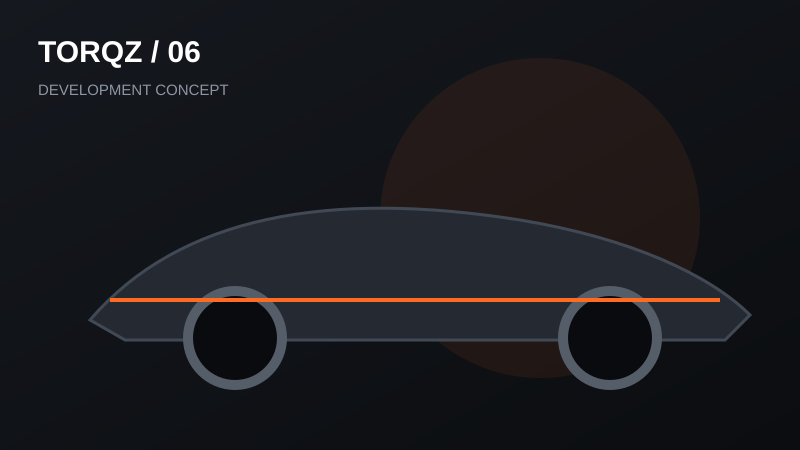

Featured now
Trending at Torqz
Projects and concepts currently being tracked.

Project 01
PRE-RELEASEThe first official Torqz BeamNG.drive project. Real specifications and screenshots will replace placeholders as development locks in.

Next Torqz Project
PLANNEDA reserved slot for the next real project. No invented title, fake download count, or fake compatibility information.